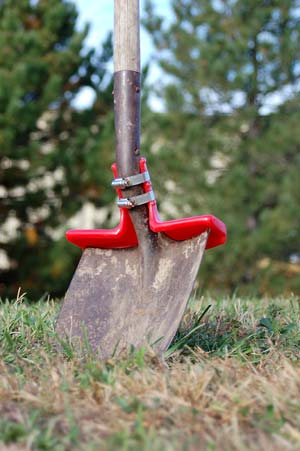

One spring day my wife said, “You’ve got to fix my shovel so it won’t hurt my feet!” Being the average understanding husband, I filed it on the “Honey-do” list and almost forgot about it. But a few weeks later, my old inventor partner, Jay Cloessner, mentioned the same problem. He suggested that we design a shovel that would cause less pain and ankle stress.
Being an old farm boy, I grew up accustomed to building things to solve problems and had been hooked on inventing since I was a teenager. Jay and I wanted to design a shovel attachment that would be safe, lightweight, durable and comfortable, fit a variety of shovels, plus reduce the stress on the user’s foot.
We tested many models and finally came up with the one pictured here, the Dig Rig. It attaches to the shovel handle and rests on the footrest. Not only is the top edge wide enough to make digging easier on your feet, but the deep footrest allows you to carry more dirt on your shovel without it falling off the back.
You can order a Dig Rig for $5.99 plus S&H here or by calling (877) 590-1599. - Mother
|
 FRED CHURCHMAN This shovel attachment makes digging less painful for your feet. |
|
|